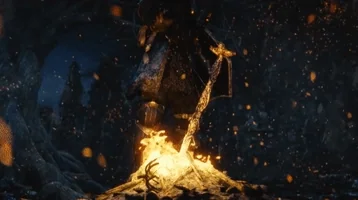
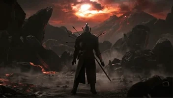
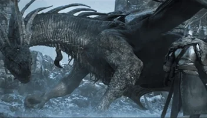

Dark Souls 1
A história de Dark Souls 1 gira em torno de ciclos de luz e escuridão, impulsionados pela Primeira Chama (First Flame) e pelas Almas dos Lordes encontradas por seres primitivos no alvorecer do mundo.

A Era Dos Antigos
O mundo inicial: Antes da chama, o mundo era cinzento, sem cor, coberto de neblina e dominado pelos Dragões Eternos (Everlasting Dragons), que possuíam escamas impenetráveis e viviam em imobilidade. O surgimento da Chama: No subsolo, a Primeira Chama nasceu, trazendo a disparidade: calor e frio, vida e morte, e, acima de tudo, luz e escuridão.

A Guerra contra os Dragões e a Era do Fogo
O mundo inicial: Antes da chama, o mundo era cinzento, sem cor, coberto de neblina e dominado pelos Dragões Eternos (Everlasting Dragons), que possuíam escamas impenetráveis e viviam em imobilidade.O surgimento da Chama: No subsolo, a Primeira Chama nasceu, trazendo a disparidade: calor e frio, vida e morte, e, acima de tudo, luz e escuridão.
